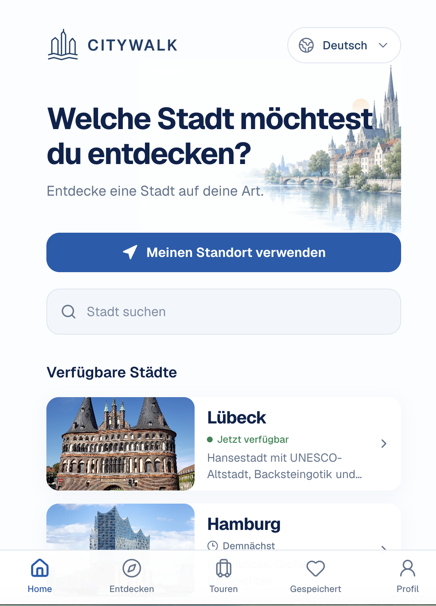
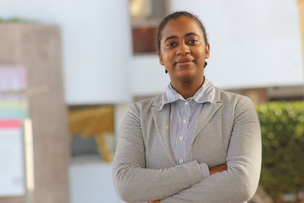
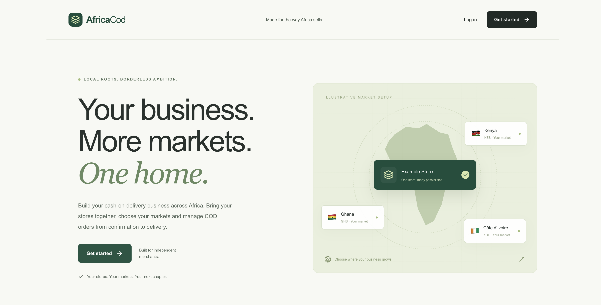

CITYWALK
A mobile city-exploration experience combining time-aware walking routes, local stories, audio and a place-aware AI guide.
React NativeExpoTypeScriptAI
Projektwebsite besuchen ↗
SOFTWARE ENGINEER · DÜSSELDORF
I'm a software developer currently building CITYWALK. Focused on crafting delightful digital products. Based in Düsseldorf, Germany.

I'm Assia, a software developer based in Düsseldorf. I enjoy creating digital products that make everyday tasks easier and feel good to use.
My work connects frontend and backend development. I like understanding a problem, turning it into a clear solution, and refining the details through testing and feedback.
Alongside coding, I'm interested in interface design and visual communication. I'm currently building CITYWALK, a city-exploration experience for web and mobile.

A mobile city-exploration experience combining time-aware walking routes, local stories, audio and a place-aware AI guide.

A multi-market cash-on-delivery commerce workspace for store onboarding, product offers and order workflows.
A journey through software development, web applications and practical problem-solving.
Mission Mittelstand GmbH
Worked on the AI-powered Bubora web application, frontend/backend features, debugging, internationalization and API integrations.
React · REST APIs · Python · Git
HUisHU. Digitale Kreativagentur GmbH
Maintained and improved web projects, provided technical support and resolved production issues.
WordPress · PHP · React
TT-Line GmbH & Co. KG
Developed and maintained internal and external web applications and resolved defects. Completed IHK vocational training.
C# · ASP.NET · JavaScript
Fondation Cheikh Zaid · Rabat
Supported the development and optimization of medical software and web features.
PHP · MySQL
Maroc Host · Témara
Developed and maintained web applications.
PHP · MySQL
2025 · IHK qualification — Fachinformatikerin für Anwendungsentwicklung (TT-Line / Emil-Possehl-Schule)
2018–2020 · Technical training in computer development — HAY-RIAD, Rabat